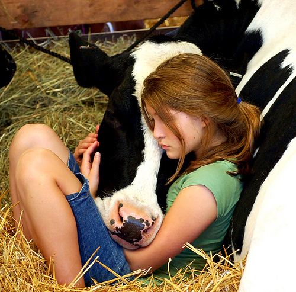
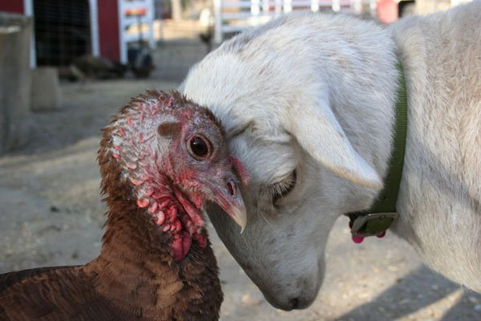

Becoming Vegan
"Veganism is not about giving anything up or losing anything; it is about gaining the peace within yourself that comes from embracing nonviolence and refusing to participate in the exploitation of the vulnerable"
Where to Start?
Some of our newly vegan friends are worried they'll have trouble living in a small town where specialty soy products aren't available. To the contrary, eating a vegan version of a typical omnivore diet is one of the worst ways to kick off your first day as a vegan.
Not that there's anything wrong with having a vegan soy patty or soy grilled cheese, but it's neither healthy, affordable, or practical to sustain yourself on those types of foods. Instead, familiarize yourself with new kinds of ingredients like tofu and tempeh. Try out some of our excellent vegan recipes. We've designed these recipes to be easy to make in any part of the world.
We also recommend converting your kitchen as well as yourself. Make sure you are stocked with vegan foods so it's easy to fulfill those late-night snack temptations. Consider buying granola and pouring it in a bowl. It's cheap, doesn't require preparation, and it's a nice standby for a vegan snack any time of the day.
If you think you can go vegan overnight, don't even hesitate! However, if you still have cold feet, try eating a vegan breakfast for a few weeks, then a vegan lunch for a few weeks, and finally a vegan dinner for a few weeks.
Is Veganism Expensive?
No! Veganism is not expensive. While there are plenty of nonvegans ready to tell you otherwise, this is largely due to the myth that vegans are eating processed soy versions of what everyone else eats. In fact, vegans survive mainly on beans, rice, pasta, fruits, and vegetables--the cheapest ingredients on earth.
This myth is also perpetuated by specialty vegan restaurants with either the same processed ingredients or high quality prepared dishes. But is this really any different from other specialty restaurants?
Veganism is actually easy, even on a college student's budget.Ridiculously Easy Lunchbox Enchilada anyone?
If you're not a fan of recipes, look into prepared thai and indian foods, which are often vegan or can be made so very easily.
What About my Nonvegan Things?
What should we do about the leather wallets, shoes, or wool coats we have collected before we even heard about veganism? Of course, it would be ideal to have all vegan items, but shouldn't it be okay to use these since they've already been purchased?
This is a good time to remind ourselves the issue of what we do to animals is not treatment, but use. Sure, wearing a leather belt another day doesn't cause the deceased to suffer even more, but an understanding of the injustice we cause to animals should have us asking why we consider a dead animal's body parts fashion?
If you see animals as something other than objects of our property, getting rid of animal based belongings isn't wasteful. Would we call the burying of our deceased loved ones "wasteful" because we did not turn them into leather shoes? We don't because we don't view them as resources in the first place and that's exactly what "waste" implies.
Family Issues
Even though you're motivated to go vegan, you may have some reservations about the reaction you'll get from those close to you. Here are a few tips and resources for making things work with your family.
Being vegan in a nonvegan family
Not all families are equally supportive of a vegan life. This is often fueled by negative myths about a vegan's diet as well as the importance of traditional foods within a family.
You can ease any resistance you may get from your family by doing your research. Learn as much as you can about vegan health and insure you have plenty of b12, omega-3, and iron on your menu.
As for your family's high regard for traditional foods, it may just take a while for them to get used to veganism. Be as respectful as possible and even try making some traditional dishes vegan. This will communicate to them you're not that far out there and you're still able to take part in important family traditions.
Raising vegan children
Plenty of vegans have raised (very) healthy, happy children and it's easier than you think.
Check out these blogs from actual vegan parents:
- Our Precious Rose
From vegan parent Melissa Viau, this blog chronicles the life of the Viau family's vegan child, Rose and living as a vegan parent. - Our Vegan Pregnancy
Vegan couple Lucas and Kenya's blog orignally on vegan preganancy--which now continues with the lives of their healthy, growing vegan children.
Recommended Reading
Eat Like you Care by Gary Francione and Anna Charlton
"Brilliantly written. Clear, no nonsense, non emotional straight talk. A must read for everyone. Period. Too many people are ignorant of how their food is produced. This clears up any myths and states the facts irrevocably."
Becoming Vegan by Brenda Davis and Vesanto Melina
Everything you need to know about vegan nutrition. Advice for pregnant women, infants, kids, teens, the middle years, seniors, and athletes. Lots of sample meal plans.
Vegan Freak by Bob Torres and Jenna Torres
VeganFreak offers solid advice for dealing with the non-vegan world. This is a book you'll want to keep handy, particularly if you are a new vegan trying to negotiate the grocery store, restaurants, and questions/challenges from friends and family.
Generation V: The Complete Guide To Going, Being, And Staying Vegan As A Teenager by Claire Askew
Essential for the teen vegan. Claire Askew is a talented writer who has filled a niche with "Generation V", providing vital information and support to teens who are vegans in a primarily non-vegan teen world.
Introduction To Animal Rights: Your Child or the Dog? by Gary L Francione
The best and most consistent book ever written on animal rights.
It caused me to become vegan (and I am grateful for it).
“Be the change you want to see in the world"